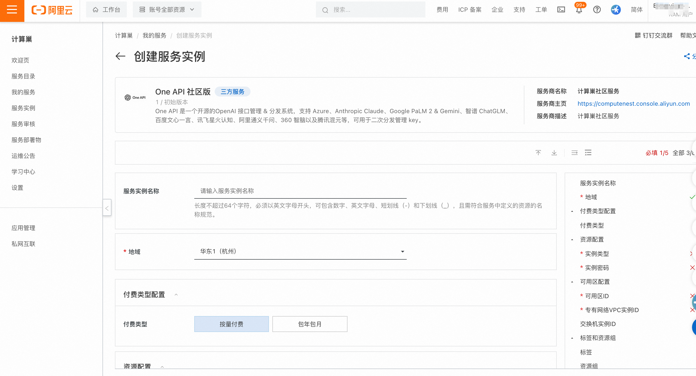
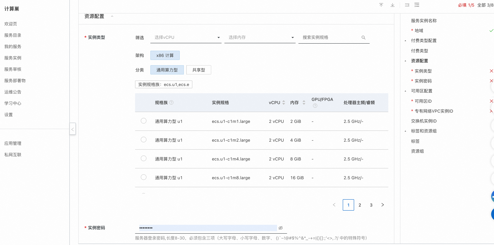
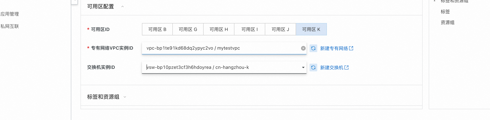
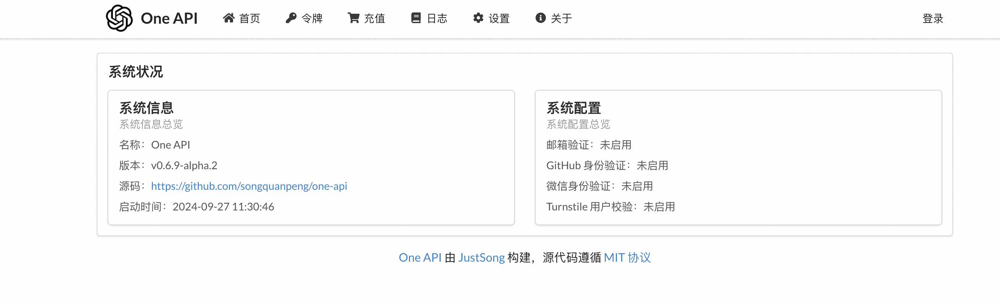

one-api服务实例部署文档
概述
one-api是一个开源的OpenAI 接口管理 & 分发系统，支持 Azure、Anthropic Claude、Google PaLM 2 & Gemini、智谱 ChatGLM、百度文心一言、讯飞星火认知、阿里通义千问、360 智脑以及腾讯混元等，可用于二次分发管理 key。 详情请看 one-api.
计费说明
one-api在计算巢上的费用主要涉及：
所选vCPU与内存规格 磁盘容量 公网带宽 计费方式包括： - 按量付费（小时） - 包年包月 预估费用在创建实例时可实时看到。
部署架构
One Api社区版是单机部署架构。
RAM账号所需权限
One Api服务需要对ECS、VPC等资源进行访问和创建操作，若您使用RAM用户创建服务实例，需要在创建服务实例前，对使用的RAM用户的账号添加相应资源的权限。添加RAM权限的详细操作，请参见为RAM用户授权 。所需权限如下表所示。
| 权限策略名称 | 备注 |
|---|---|
| AliyunECSFullAccess | 管理云服务器服务（ECS）的权限 |
| AliyunVPCFullAccess | 管理专有网络（VPC）的权限 |
| AliyunROSFullAccess | 管理资源编排服务（ROS）的权限 |
| AliyunComputeNestUserFullAccess | 管理计算巢服务（ComputeNest）的用户侧权限 |
| AliyunCloudMonitorFullAccess | 管理云监控（CloudMonitor）的权限 |
部署流程
部署步骤
- 单击部署链接，进入服务实例部署界面。
- 根据界面提示，填写参数完成部署。   
- 设置完参数后，点击下一步确认订单，点击立即创建，等待服务实例创建完成。
- 服务实例创建成功后，进入服务实例详情页。在概览页可获取one-api登录信息。 
© 2009-2022 Aliyun.com 版权所有